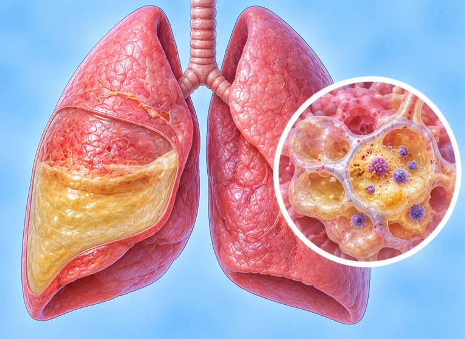

细菌性肺炎
由细菌引起的肺部感染，会发烧、咳嗽、呼吸困难
这是什么
细菌感染肺里的微小气囊，气囊可能充满液体。这会让人相当不适，需要尽快让医生检查。
- 肺部
- 各年龄；老年人更严重
- 发烧、咳嗽、疲倦
- 就诊科室
- 家庭医生；不适时去医院
- 多发人群
- 幼儿、老年人、吸烟者、有长期疾病的人
- 传染性
- 有些类型可以，通过咳嗽和喷嚏
- 病程
- 在医生照顾下不少人几周内恢复；疲倦可能更久
常见表现

发烧发热 
发冷发抖寒战 咳嗽有痰咳痰 
吸气时胸痛胸膜性胸痛 
爬楼梯气短劳力性呼吸困难 
总是疲劳疲劳
为什么会这样

细菌或病毒感染感染性病因 
人多的地方与飞沫飞沫传播 
吸烟吸烟（烟草使用） 
免疫力低下免疫抑制
出现这些情况请先看医生
- 呼吸困难、嘴唇发紫或无法说完整句子：拨打999
- 突然意识混乱、非常嗜睡或昏倒：拨打999
- 胸痛或咳血：立即去医院
- 高烧、发冷发抖，或发烧不退
- 婴儿、儿童或老年人不适：尽快看医生
如果有以上情况，请先看医生，再来做调理。
本页只是一般性的健康资讯。请继续按时服用平常的药物，并继续看医生。
请继续日常治疗
请继续按医嘱服药，并按时复诊。我们的调理是温和的辅助，不能代替医疗。
日常护理

多喝水充足补水 
戒烟戒烟 
按建议接种疫苗疫苗接种
更多自我照顾的方法
- 遵照医生的安排，完成医生开的药
- 在家休息直到好转，咳嗽时掩住口鼻
告诉理疗师
- 发烧或正在感染
- 心脏病
- 高血压
- 怀孕
调理师会在开始前和你确认这一项。
常见问题
细菌性肺炎是什么？
由细菌引起的肺部感染，会发烧、咳嗽、呼吸困难。细菌感染肺里的微小气囊，气囊可能充满液体。这会让人相当不适，需要尽快让医生检查。
细菌性肺炎有哪些常见表现？
发烧；发冷发抖；咳嗽有痰；吸气时胸痛；爬楼梯气短；总是疲劳
为什么会有细菌性肺炎？
细菌或病毒感染；人多的地方与飞沫；吸烟；免疫力低下
有细菌性肺炎要怎么照顾自己？
多喝水；戒烟；按建议接种疫苗
AI Body Master 的调理对细菌性肺炎有帮助吗？
调理是温和的无针经络养生辅助，不能治疗或治愈细菌性肺炎，也不能代替药物或医生。开始前请告诉理疗师。
相关疾病
参考资料: General information based on public health sources such as Mayo Clinic, NHS, Cleveland Clinic and NCBI StatPearls.
页面更新: 2026-11-09